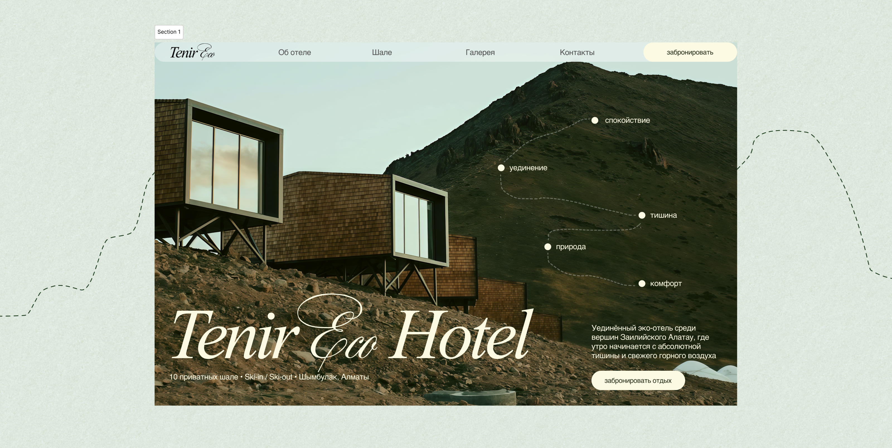
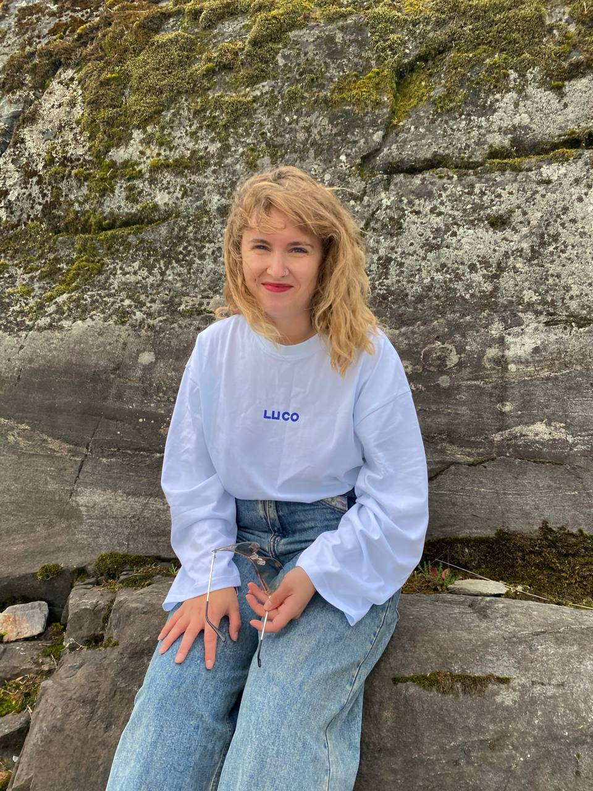
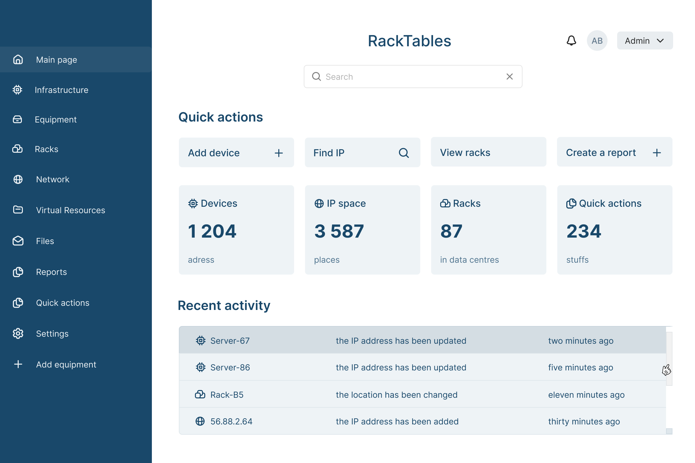
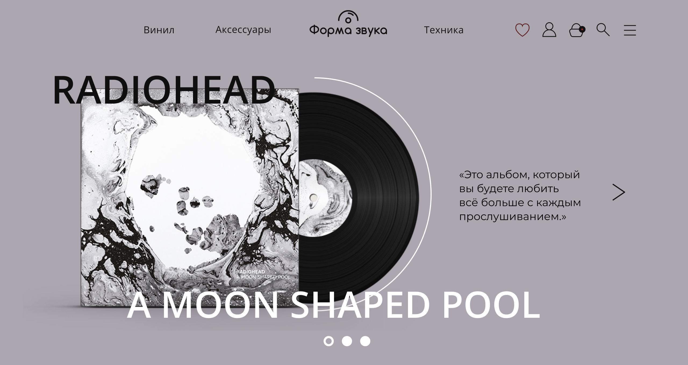
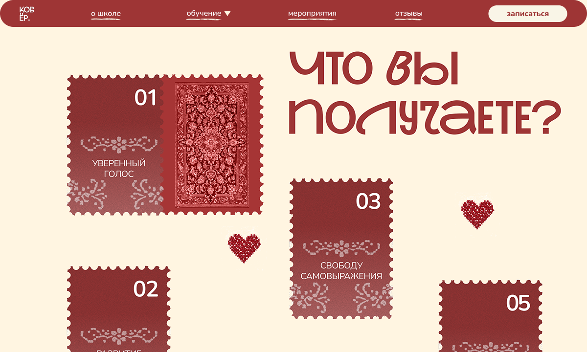

Дизайн сайта для эко-отеля
Презентация номеров, инфраструктуры и бронирование для загородного эко-отеля.



Презентация номеров, инфраструктуры и бронирование для загородного эко-отеля.

Главный экран системы учёта IT-инфраструктуры: навигация, дашборд, информационная плотность.

Каталог, карточка продукта, корзина, проектирование ЛК, user flow для магазина винила: поиск, фильтры, оформление заказа.

Креативная концепция и визуальный язык для школы вокала: типографика, палитра, ключевые экраны.
создаю проекты по продуктовому и веб-дизайну,
концептам и интерфейсам.